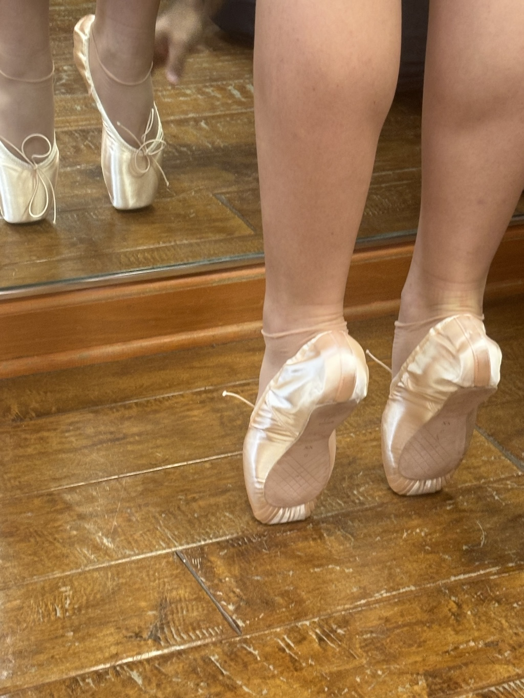
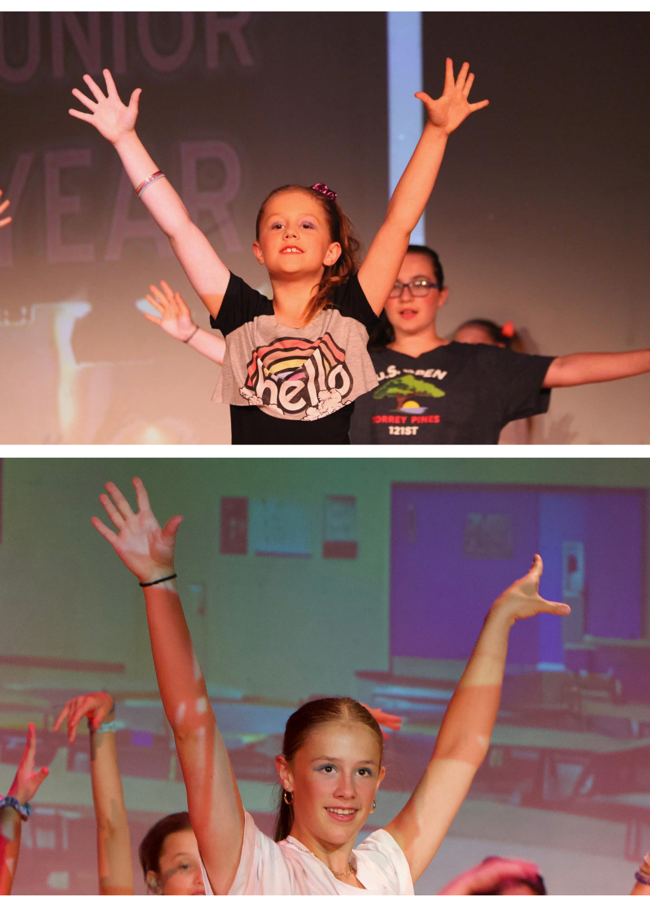

Emily's Year in Pictures
Pointe
After 12 years of dance training, I finally get the pointe of it. Please note, this really bad pun was written by my dad, because he is the one who has edit access to this page. However, I get to choose his retirement home!
Fame
Does one ever get a second chance at Fame? Yes, at least as far as school plays go. I did Fame when I was in 4th grade, and this year I got to do it all over again. This was my final show at Elmwood Franklin School. Thanks so much for the wonderful memories, and a special thanks to Mrs Cooke-MacVittae who directed me in 19 shows. Truly the end of an era for me.
Eiffel

I have an idea for a television show. I feel it could involve Paris, and my name. Maybe "Emily goes to live in a city in Europe". The title still needs some work, but if you get the chance to visit Paris, you will not be disappointed.
Nationals
Every two years the residents of Ocean City MD. experience a blizzard of sequines and hairspray when teams of competitive dancers decend upon the convention centre. This year our opening routine "Disco Fever" was selected for the "Battle of the Stars". Huge fun, and thanks to all my teachers for their amazing work.